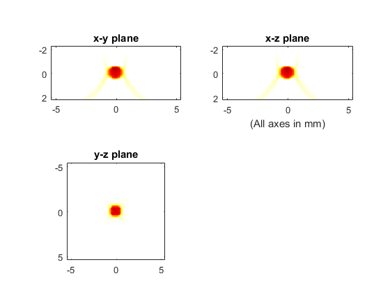

3D Time Reversal Reconstruction For A Planar Sensor Example
This example demonstrates the use of k-Wave for the reconstruction of a three-dimensional photoacoustic wave-field recorded over a planar array of sensor elements. The sensor data is simulated and then time-reversed using kspaceFirstOrder3D. It builds on the 3D FFT Reconstruction For A Planar Sensor and 2D Time Reversal Reconstruction For A Line Sensor examples.
Contents
Performing the reconstruction
The sensor data is simulated using kspaceFirstOrder3D in the same way as in preceding examples. The utilised initial pressure distribution and the sensor mask are shown in 3D FFT Reconstruction For A Planar Sensor. The time-reversal reconstruction is then performed by assigning the time varying pressure recorded over the detector array to sensor.time_reversal_boundary_data.
% run the simulation sensor_data = kspaceFirstOrder3D(kgrid, medium, source, sensor, input_args{:}); % reset the initial pressure source.p0 = 0; % assign the time reversal data sensor.time_reversal_boundary_data = sensor_data; % run the time-reversal reconstruction p0_recon = kspaceFirstOrder3D(kgrid, medium, source, sensor, input_args{:});
A plot of the reconstructed initial pressure distribution with a positivity condition is shown below.
